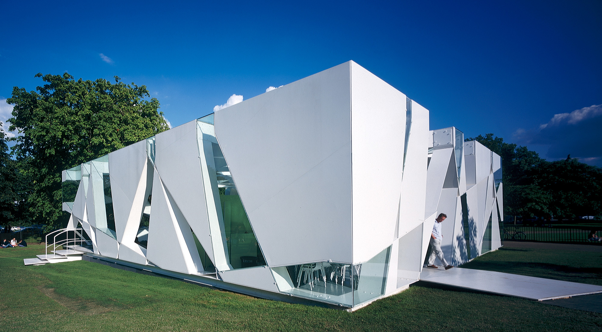

Acceuil
L'architect
japonais
Tôyô Itô
L'exposition
"Tradition et
modernité"
Dates :
13 avril au 23 juin 2023

 Lieu :
Lieu :
Fondation Cartier, 261 Bd Raspail 75014 Paris
 Horaires
d'ouverture :
Horaires
d'ouverture :
Tous les jours de 11h à 20h, sauf le lundi.
Nocturne le mardi, jusqu'à 22h.
La
fermeture des salles débute à 19h45
Tarifs :
Plein tarif = 11€
Tarif réduit = 7,50€
Réduction 13 - 25 ans = 5€
Fondation Cartier Pass = 18€ - 50€
Moins de 13 ans, Laissez-passer annuel,
carte Icom, carte de presse, carte d'invalidité
Fondation Cartier Pass, Etudiants = Gratuit
Tôyô Itô
Toyō Itō est un architecte japonais connu pour avoir créé l'architecture dite conceptuelle.
Ses œuvres
Ito Toyo crée des bâtiments
uniques et impressionnants. Ses œuvres sont souvent inspirées par la nature, la culture et la
technologie.
Voir les autres réalisations.